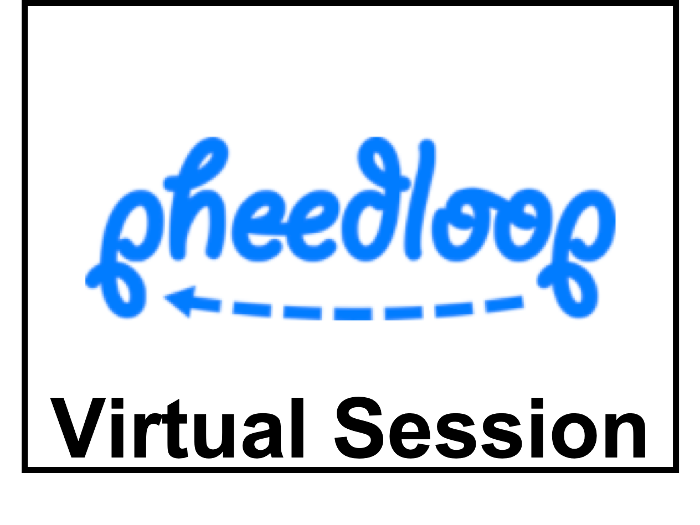

RSS Proceedings
attending
Instructions for Conference Attendees
RSS 2020 Code of Conduct
Registration
Inclusion@RSS
RSS Pioneers
committees
Organizing Committee
Program Committee
RSS Foundation
information
Instructions for Paper Discussion Sessions
Author Information
Call for Papers
Call for Participation
Call for Workshops
Information for Student Helpers
Sponsors
program
Detailed Program
Paper Awards
Keynote Talk
Test of Time Award
Early Career Awards
Accepted Papers
Workshops
follow us
Elaborating on Learned Demonstrations with Temporal Logic Specifications
Craig Innes, Subramanian Ramamoorthy
 |
Abstract
Most current methods for learning from demonstrations assume that those demonstrations alone are sufficient to learn the underlying task. This is often untrue, especially if extra safety specifications exist which were not present in the original demonstrations. In this paper, we allow an expert to elaborate on their original demonstration with additional specification information using linear temporal logic (LTL). Our system converts LTL specifications into a differentiable loss. This loss is then used to learn a dynamic movement primitive that satisfies the underlying specification, while remaining close to the original demonstration. Further, by leveraging adversarial training, our system learns to robustly satisfy the given LTL specification on unseen inputs, not just those seen in training. We show our method is expressive enough to work across a variety of common movement specification patterns such as obstacle avoidance, patrolling, keeping steady, and speed limitation. In addition, we show our system can modify a base demonstration with complex specifications by incrementally composing multiple simpler specifications. We also implement our system on a PR-2 robot to show how a demonstrator can start with an initial (sub-optimal) demonstration, then interactively improve task success by including additional specifications enforced with our differentiable LTL loss.
Live Paper Discussion Information
|  | Start Time | End Time |
|---|---|---|
| 07/14 15:00 UTC | 07/14 17:00 UTC |
Virtual Conference Presentation
Supplementary Video
Paper Reviews
Review 3
This paper addresses a failing of the traditional learning from demonstration (LfD) paradigm, in which a human demonstrates a skill once or a few times and then the robot learns to generalize the skill. The paper observes that often there are a set of other constraints that apply implicitly even if they are not obviously part of the demonstration. Since these constraints are both subtle and important, it may take a large number of demonstrations to learn them accurately. The contribution is to represent an LTL specification in a differentiable form and combine it with a conventional LfD framework so that the robot can learn a representation of the skill that obeys the specification with maximum likelihood when generalizing. The paper is well organized and clearly written. The paper effectively leverages and merges the work from the authors and others into a novel whole. LTL has seemingly become a very popular in robotics as a means of expressing specifications or restrictions on robot behavior. The trouble with learning skills subject to hard constraints is that it forces us to solve challenging constrained optimization problems. The paper's contribution transforms this into an unconstrained, multiobjective optimization, which is much easier to solve. The paper uses adversarial learning to increase the robustness of the skills when generalizing to novel configurations. This feature particularly helps improve compliance with the specifications. One nagging question in my mind is that since the specification was turned into a soft constrained, it is no longer exactly satisfied. Can this effect be empirically quantified? Does it effectively promote solutions on the boundary of the specification space? Does it produce many solutions that just barely meet the specification, or just barely fail to satisfy it? For many constraints, like not tipping a cup, the soft constraint is good enough. For some others, like touching an object, could it be insufficient? Regarding the touching of objects, the paper writes specifications like EVENTUALLY p_xyz = x_i,3. That is, the end-effector pose eventually visits the green cube. However, this does not take into account the trajectory taken to reach that pose or the inverse kinematic solution. That creates the likelihood that the robot's end-effector or elbow will collide with the green cube or some other object before reaching the specified configuration. Should we expect that in a more realistic scenario, the specification would include such restrictions as well? The method is validated on a simple 2D problem in simulation and also on a real PR2 robot. There is definitely opportunity to do a more exhaustive and compelling validation of the method that would look at other metrics besides loss and end-effector trajectories in 6D. For instance, how often was the specification violated? How close to meeting the specification was the trajectory on average (maybe use a signed distance field)? How much longer/more costly was the generated trajectory compared to baseline methods? I don't really find loss to be a particularly compelling metric because it stands to reason that if you optimize something explicitly, the loss function for that thing will be smaller. If there were one thing I could change about this paper, it would be to use more application-relevant metrics for the results. Nevertheless, the method is novel and interesting and relevant to robotics.
| |